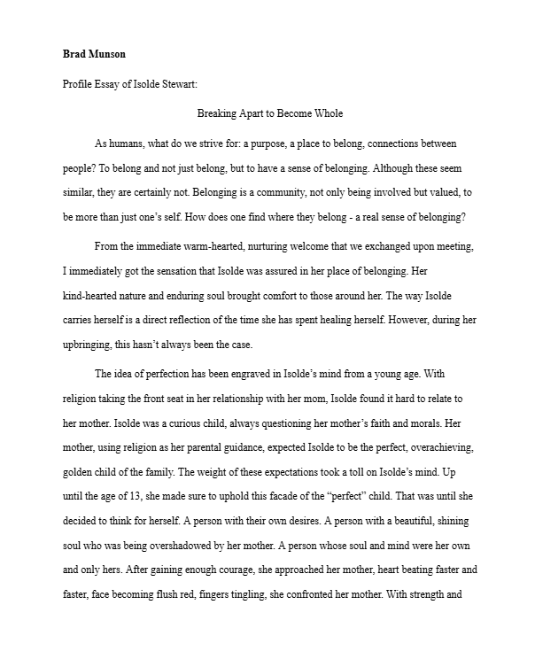

One of my projects I have completed on my own using Affect Effects. Through following different video tutorials I was able to create this simple affect using the program Affect Effects.

Project that I created in Touchdesigner that takes the input from the mouse to create a particle vortex. When moving the mouse farther away the vortex speeds up and moving the mouse upwards creates a tighter spin.
This is a profile essay that I completed for a class which I am very proud of. I had to interview a community member and write about a specific period of their life while incorpating pathos, ethos, and logos.
Another design using Touchdesigner that makes a scene that seems as if you are moving through space. Using different colors and shapes I am able to get this effect.